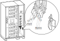

Remove the gland plate in the top or bottom of the I/O
section.
Figure 2. Top and Bottom Front View of the UPS Cabinet
Drill holes and install conduits for power cables and for
control cables in the gland plate. Conduits are not provided.
DANGER
Hazard of electric shock, explosion, or arc flash
Do not drill or cut holes for cables or conduits with
the gland plate installed and do not drill or cut holes in close proximity
to the UPS.
Reinstall the gland plate.
Route the equipment grounding conductor through the top
or bottom of the I/O section and connect it to the ground busbar.
Route the input cables through the top or bottom of the
I/O section and connect the input cables to the input busbars (L1,
L2, L3, (N)). The neutral cable connects in the left side of the I/O
section.
Note: Only connect input N in single mains systems.
Route the bypass cables through the top or bottom of the
I/O section and connect the bypass cables to the bypass busbars (L1,
L2, L3, N). The neutral cable connects in the left side of the I/O
section.
Note: Only connect bypass cables in dual mains systems.
Figure 3. Front View of the UPS Cabinet

Route the output cables through the top or bottom of the
I/O section and connect the output cables to the output busbars (L1,
L2, L3, N). The neutral cable connects in the left side of the I/O
section.
Only for configurations with remote battery cabinet(s): Route the battery cables (+,-, ground) through the top or bottom
of the I/O section and connect the battery cables to the battery busbars
(+, –) and to the ground busbar.
Note: These battery busbars are only for remote battery cabinets.
Figure 4. Front View of the UPS Cabinet
Only for configurations with adjacent battery cabinet(s): Route the battery cables (+,-, ground) through the left side panel
and connect them to the battery busbars (+, –) and the ground
busbar in the power section.
Note: These battery busbars are only for adjacent battery
cabinets.